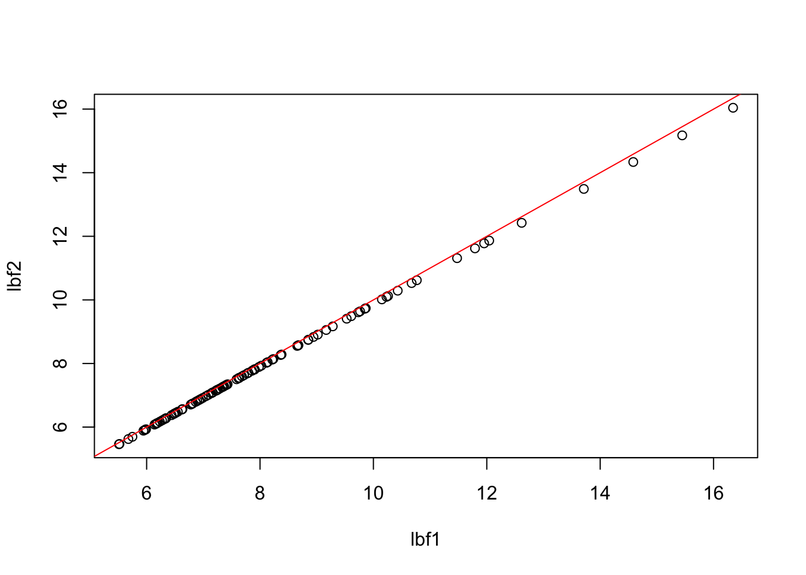
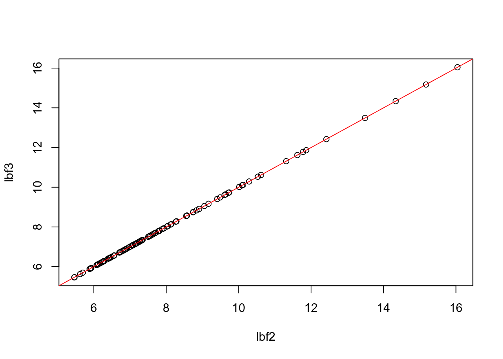
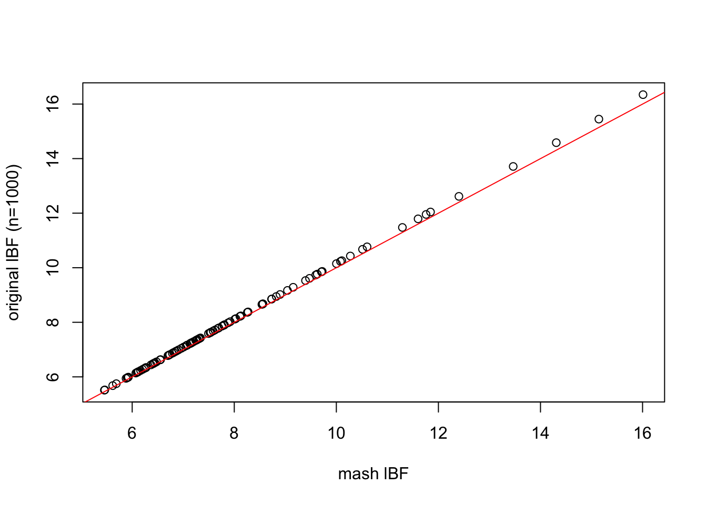
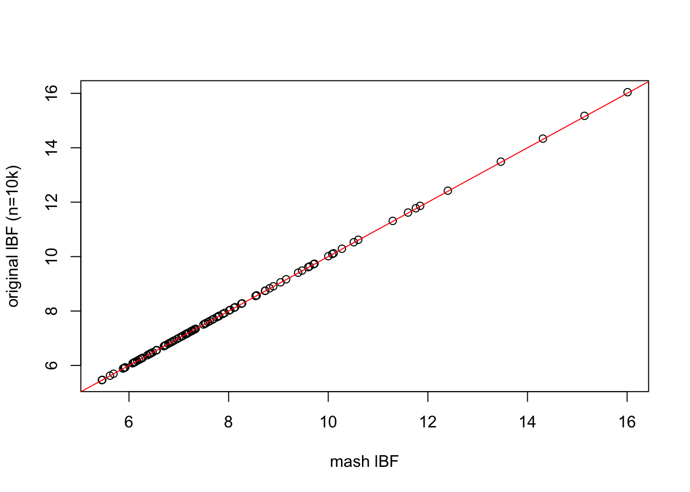
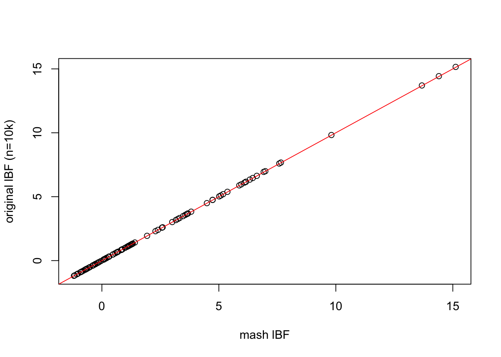
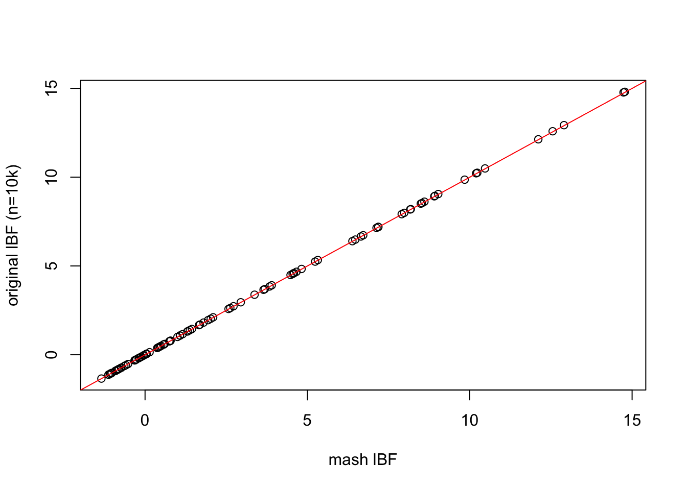
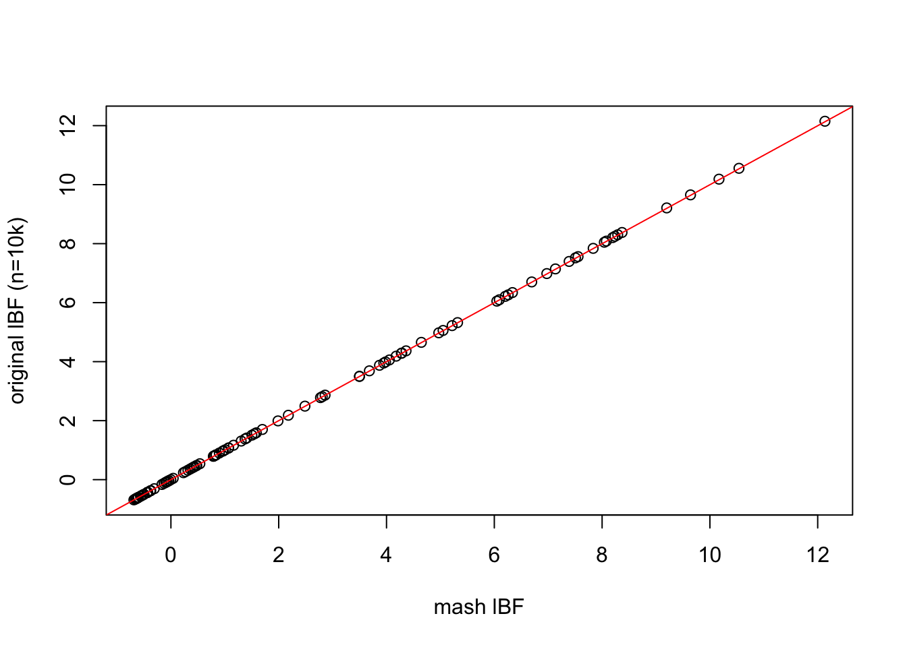
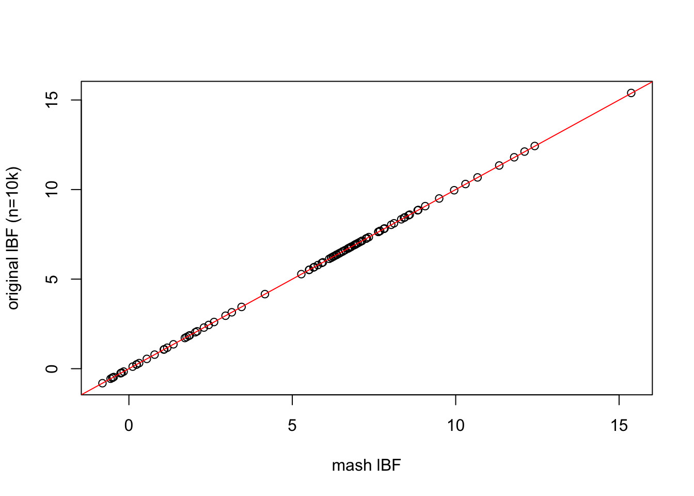

Explorations of implementing the UDI framework in mash
Matthew Stephens
2017-06-25
Last updated: 2017-06-26
Code version: f6f5121
Preliminary
First, here is the code from Stephens (2013) PloS ONE
#' @param VYX is (1/n) Y'X is d by p
#' @param VYY is (1/n) Y'Y is d by d
#' @param VXX a p-vector of the estimated variances of the SNP
#' @param U vector of length d of true/false
#' @param D vector of length d of true/false
#' @param n sample size the summaries were computed from
#' @param m a parameter in the prior (I believe)
#' @param d the number of phenotypes
#' @param sigmaa the parameter of the prior determining effect size
logBF.fromVSummaries = function(VYX,VYY,VXX,U,D,n,m,d,sigmaa){
dd = sum(D)
du= sum(U)
p = dim(VYX)[2]
if(du>0){
LUU = chol(VYY[U,U,drop=FALSE]) # a du by du matrix
VUD = VYY[U,D,drop=FALSE] #a du by dd matrix of the correlations of Yu with Yd
c = cbind(forwardsolve(t(LUU),VYX[U,,drop=FALSE]))#c solves LUU'c = phiU, c is a du by p matrix
b = cbind(forwardsolve(t(LUU), VUD)) # b is du by dd, and solves LUU' b = VUD, so b'b = VUD' LUU^-1 LUU'^-1 VUD = VUD' (LUU'LUU)^-1 VUD = VUD'VYYU^-1 VUD
} else{c=matrix(0,nrow=1,ncol=p); b=matrix(0,nrow=1,ncol=dd);}
C = VXX - colSums(c*c)
u = VYX[D,,drop=FALSE] - crossprod(b,c)
V0 = VYY[D,D,drop=FALSE] - crossprod(b)
L0 = chol(V0)
a = forwardsolve(t(L0),u)
lambda = sigmaa^(-2) / (n*C)
k = as.numeric(1/(1+lambda))
return((dd/2) * log(1-k) - 0.5*(n+m-(d-sum(D)-sum(U)))*log(1-(k/C) *colSums(a*a)))
}And now how we apply this to summary data based on the methods in Stephens (2016)
#' @param Z a p by d matrix of Z scores
#' @param VYY a d by d matrix
#' @param f a p vector containing the frequencies of the p SNPs
logBF.fromZ = function(Z,VYY,f,U,D,n,m,sigmaa){
VXX = 2*f*(1-f)
VYX = t(sqrt(VXX/n) * Z)
logBF.fromVSummaries(VYX,VYY,VXX,U,D,n,m,d=ncol(Z),sigmaa)
}Read in some example data
z = read.table("../data/bmass.HaemgenRBC2016.Vs2.NewSNPs.ZScores.hclust.vs1.txt",header=TRUE)
z = as.matrix(z[,2:7])
V = diag(6)
V[1,]=c(0.5,-0.47,0.80,-0.47,0.73,-0.13)
V[2,2:6] = c(0.5,0.12,0.87,0.12,0.03)
V[3,3:6] = c(0.5,0.04,0.93,-0.1)
V[4,4:6] = c(0.5,0.20,0.46)
V[5,5:6] =c(0.5,0.22)
V[6,6] = 0.5
V = V+t(V)And apply the method. Here we show how changes in n and f give the same BF if we scale the prior parameter sigma_a like \(1/\sqrt{2f(1-f)n}\).
First scaling in n:
UU = c(F,F,F,F,F,F)
DD = c(T,T,T,T,T,T)
p = nrow(z)
f = 0.5
lbf1=logBF.fromZ(z,V,rep(f,p), UU,DD,n=1000,m=0,sigmaa=sqrt(1/(2*f*(1-f)*1000)))
lbf2=logBF.fromZ(z,V,rep(f,p), UU,DD,n=10000,m=0,sigmaa=sqrt(1/(2*f*(1-f)*10000)))
plot(lbf1,lbf2)
abline(a=0,b=1,col=2)
Now try changing f:
f = 0.2
lbf3=logBF.fromZ(z,V,rep(f,p), UU,DD,n=10000,m=0,sigmaa=sqrt(1/(2*f*(1-f)*10000)))
plot(lbf2,lbf3)
abline(a=0,b=1,col=2)
Now check the mashr version:
library("mashr")
data = set_mash_data(z,1,V)
Ulist = c(list(null= mashr:::cov_all_zeros(data)),cov_udi(data,c("D","D","D","D","D","D")))
temp = calc_lik_matrix(data,Ulist,log=TRUE)
plot(temp[,2]-temp[,1],lbf1,xlab="mash lBF",ylab="original lBF (n=1000)")
abline(a=0,b=1,col=2) Pretty good agreement. But even better if we use the version with n=10k:
plot(temp[,2]-temp[,1],lbf2,xlab="mash lBF",ylab="original lBF (n=10k)")
abline(a=0,b=1,col=2)
Now try making the first two components unassociated
UU = c(T,T,F,F,F,F)
DD = c(F,F,T,T,T,T)
lbf=logBF.fromZ(z,V,rep(f,p),UU,DD,n=10000,m=0,sigmaa=sqrt(1/(2*f*(1-f)*10000)))
data = set_mash_data(z,1,V)
Ulist = c(list(null= mashr:::cov_all_zeros(data)), cov_udi(data,c("U","U","D","D","D","D")))
temp = calc_lik_matrix(data,Ulist,log=TRUE)
plot(temp[,2]-temp[,1],lbf,xlab="mash lBF",ylab="original lBF (n=10k)")
abline(a=0,b=1,col=2)
And making components 3-4 unassociated
UU = c(F,F,T,T,F,F)
DD = c(T,T,F,F,T,T)
lbf=logBF.fromZ(z,V,rep(f,p),UU,DD,n=10000,m=0,sigmaa=sqrt(1/(2*f*(1-f)*10000)))
data = set_mash_data(z,1,V)
Ulist = c(list(null= mashr:::cov_all_zeros(data)), cov_udi(data,c("D","D","U","U","D","D")))
temp = calc_lik_matrix(data,Ulist,log=TRUE)
plot(temp[,2]-temp[,1],lbf,xlab="mash lBF",ylab="original lBF (n=10k)")
abline(a=0,b=1,col=2)
And also making components 1 and 6 indirectly associated
UU = c(F,F,T,T,F,F)
DD = c(F,T,F,F,T,F)
lbf=logBF.fromZ(z,V,rep(f,p),UU,DD,n=10000,m=0,sigmaa=sqrt(1/(2*f*(1-f)*10000)))
data = set_mash_data(z,1,V)
Ulist = c(list(null= mashr:::cov_all_zeros(data)), cov_udi(data,c("I","D","U","U","D","I")))
temp = calc_lik_matrix(data,Ulist,log=TRUE)
plot(temp[,2]-temp[,1],lbf,xlab="mash lBF",ylab="original lBF (n=10k)")
abline(a=0,b=1,col=2)
Without any unaffected:
UU = c(F,F,F,F,F,F)
DD = c(T,T,T,F,F,F)
lbf=logBF.fromZ(z,V,rep(f,p),UU,DD,n=10000,m=0,sigmaa=sqrt(1/(2*f*(1-f)*10000)))
data = set_mash_data(z,1,V)
Ulist = c(list(null= mashr:::cov_all_zeros(data)), cov_udi(data,c("D","D","D","I","I","I")))
temp = calc_lik_matrix(data,Ulist,log=TRUE)
plot(temp[,2]-temp[,1],lbf,xlab="mash lBF",ylab="original lBF (n=10k)")
abline(a=0,b=1,col=2)
And another, just to check:
UU = c(F,F,F,F,F,F)
DD = c(F,T,F,T,F,T)
lbf=logBF.fromZ(z,V,rep(f,p),UU,DD,n=10000,m=0,sigmaa=sqrt(1/(2*f*(1-f)*10000)))
data = set_mash_data(z,1,V)
Ulist = c(list(null= mashr:::cov_all_zeros(data)), cov_udi(data,c("I","D","I","D","I","D")))
temp = calc_lik_matrix(data,Ulist,log=TRUE)
plot(temp[,2]-temp[,1],lbf,xlab="mash lBF",ylab="original lBF (n=10k)")
abline(a=0,b=1,col=2)
Session information
sessionInfo()R version 3.3.2 (2016-10-31)
Platform: x86_64-apple-darwin13.4.0 (64-bit)
Running under: OS X El Capitan 10.11.6
locale:
[1] en_US.UTF-8/en_US.UTF-8/en_US.UTF-8/C/en_US.UTF-8/en_US.UTF-8
attached base packages:
[1] stats graphics grDevices utils datasets methods base
other attached packages:
[1] mashr_0.1-19
loaded via a namespace (and not attached):
[1] Rcpp_0.12.11 knitr_1.16 magrittr_1.5
[4] MASS_7.3-47 doParallel_1.0.10 pscl_1.4.9
[7] SQUAREM_2016.8-2 lattice_0.20-35 foreach_1.4.3
[10] plyr_1.8.4 ashr_2.1-19 stringr_1.2.0
[13] tools_3.3.2 parallel_3.3.2 grid_3.3.2
[16] rmeta_2.16 git2r_0.18.0 htmltools_0.3.6
[19] iterators_1.0.8 assertthat_0.2.0 yaml_2.1.14
[22] rprojroot_1.2 digest_0.6.12 Matrix_1.2-10
[25] codetools_0.2-15 evaluate_0.10 rmarkdown_1.6
[28] stringi_1.1.5 backports_1.1.0 mvtnorm_1.0-6
[31] truncnorm_1.0-7 This R Markdown site was created with workflowr